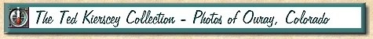
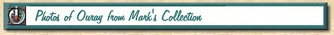
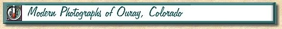

Ouray, Colorado - Switzerland of America!



This Web page is written, maintained,and hosted by:
Mark L. Evans
Send Comments to:
Mark L. Evans


 This Web page is written, maintained,and hosted by:
This Web page is written, maintained,and hosted by: